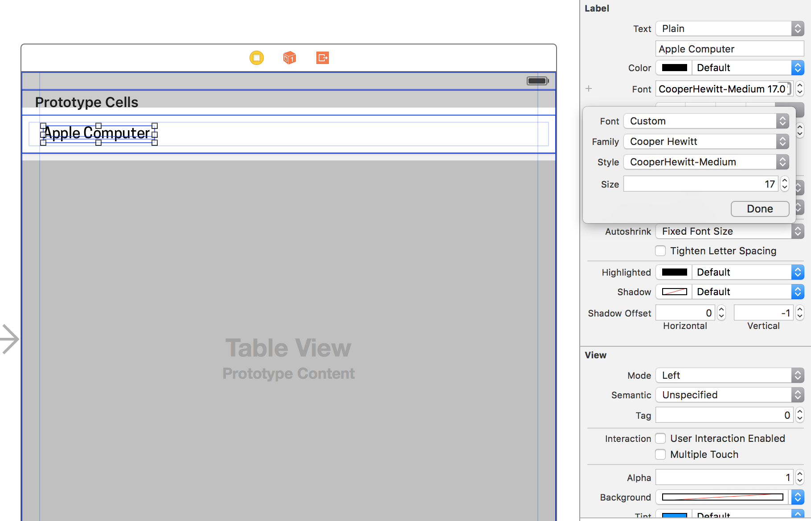

Designing in XCode with Storyboards is a very visual experience, and makes some aspects of mobile design a lot easier than having to design strictly in code. Most designers coming from the web understand that design implementation comes mostly from writing code. Whether that code be HTML, CSS, or Javascript; learning to code in order to design is a hot topic and beyond the scope of this article. But in iOS we have choices. In iOS we can decide to do most of our UI design using two tools known as Interface Builder and Storyboards.
Adding custom fonts in Xcode is not a straightforward process. The process of adding fonts can be bit of a tedious task and can be a real pain for designers. In this article we will walkthrough all the necessary steps you’ll have to take in order to add your custom fonts to Xcode.
Available Fonts in Xcode
Xcode has a pretty comprehensive list of font choices to choose from. The list of available fonts are all safe and will properly render on any iOS and MacOS device. But this list is limited and there may arise a time where you would want to add that brand new font that you’ve been dying to use in your next iOS app. So how exactly would that be done? How do we add custom fonts to XCode?
Lets go to work

1. Manually add fonts to XCode
Adding the initial font files in Xcode is actually pretty straightforward process. The tedious part comes later on. We can simply add a font-file in Xcode by clicking the + icon at the bottom of File Inspector. It doesn’t matter where you place the file in your file directory.
NOTE: If you want the different variations of a font like Bold or Italic, you have to add the Bold or Italic variants to your project file directory in addition.
2. Ensure fonts are added to Target
After adding the files to your project directory you will be prompted with a window dialog. At the bottom of this window you will se a section for Add To Targets. Ensure that is selected
3. Ensure fonts are added to ‘Build Phases’
Select your Xcode project file. In this window select the Build Phases pane. You should now see an enclosure near the bottom of the window titled Copy Bundle Resources. Open this enclosure and ensure that your font files are included in the list.
4. Add fonts to ‘Info.plist’
Okay, now the hard part. Navigate to your Info.plist. You’ll have to add a new row to your Info.plist file. You can add a new row by simply hovering over the last row in the list a clicking the + sign. In the newly added row type the text Fonts provided by application which should autocomplete after about the 5th character. This will be an array of font-file names that you want to use in your app. Starting with Item 0 manually type the name of the font-file in the Value column. Repeat this step if you plan on adding more than one font. For instance; if you have 3 custom fonts that you want to use Item 0 through Item 2 should contain the three font-files that you want to use.
NOTE: The names of the font-files must be the exact name of the files that you added to your project file directory. A failure to do this will result in an erroneous font-file and we don’t want to go down that route.
Thats pretty much it. We added the appropriate files. Ensured they were added to our build targets, and now we just need a way to reference them. We can reference a font-file via code, but lets take the visual designer approach and reference our objects and font-files using Interface Builder and Storyboards.
5. Drag and drop a ‘Label’ to ‘Storyboard’
All text objects in Interface Builder have the ability to be customized. Using the Object Library located at the bottom of Interface Builder search for a Label object. You will see the Label object populate the Object Library. Drag and drop the label onto Storyboard. With the Label object selected in Storyboard, you should now see all the attributes for the Label object including the Font attribute.
6. Choose ‘Custom Font’
Select the T within the Font dropdown and you will be presented with the a popup which gives you the ability to set Font, Family, Weight, and Size. Select Font and then immediately select Custom. Now select Family and search for the custom font you added.

Thats it! You've added and custom font to XCode without adding a ounce of code.